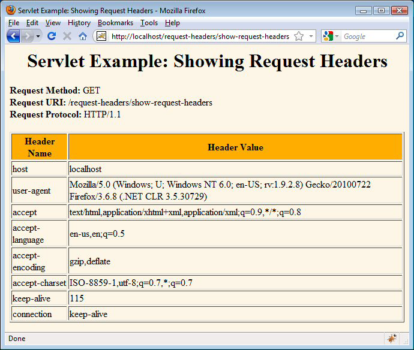
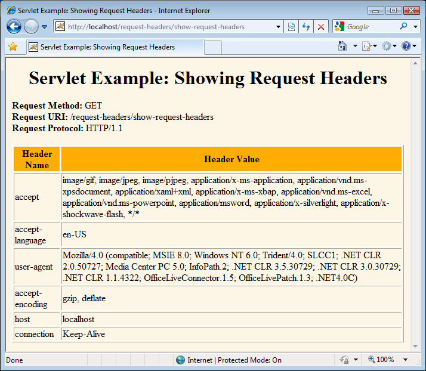
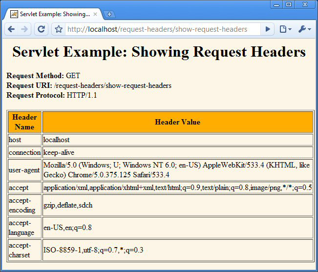
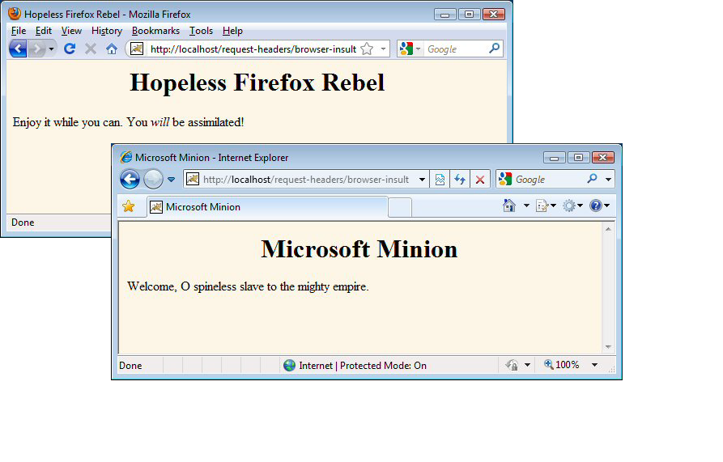

Encabezados de solicitud
La Lección
Agenda
- Reading HTTP request headers
- Building a table of all the request headers
- Understanding the various request headers
- Reducing download times by compressing pages
- Differentiating among types of browsers
A Typical HTTP Request
GET /search-servlet?keywords=servlets+jsp HTTP/1.1
Accept: image/gif, image/jpg, */*
Accept-Encoding: gzip
Connection: Keep-Alive
Cookie: userID=id456578
Host: www.somebookstore.com
Referer:
http://www.somebookstore.com/findbooks.html
User-Agent: Mozilla/4.0 (compatible; MSIE
6.0; Windows NT 5.0)
- It shouldn't take a rocket scientist to realize
that you need to understand HTTP to be effective with servlets and
JSP
Reading Request Headers(Methods in HttpServletRequest)
- General
- getHeader (header name
is not case sensitive)
- getHeaders
- getHeaderNames
- Specialized
- getCookies
- getAuthType and getRemoteUser
- getContentLength
- getContentType
- getDateHeader
- getIntHeader
- Related info
- getMethod, getRequestURI , getQueryString,
getProtocol
Checking For Missing Headers
Making a Table o fAll Request Headers
@WebServlet("/show-request-headers")
public class ShowRequestHeaders extends HttpServlet {
public void doGet(HttpServletRequest request,
HttpServletResponse response) throws ServletException, IOException {
...
// Content-Type, PrintWriter, docType defn, etc.
out.println(docType +
"<HTML>\n" +
"<HEAD><TITLE>"+title+"</TITLE></HEAD>\n"+
"<BODY BGCOLOR=\"#FDF5E6\">\n" +
"<H1 ALIGN=\"CENTER\">" + title + "</H1>\n" +
"<B>Request Method: </B>" +
request.getMethod() + "<BR>\n" +
"<B>Request URI: </B>" +
request.getRequestURI() + "<BR>\n" +
"<B>Request Protocol: </B>" +
request.getProtocol() + "<BR><BR>\n" +8
"<TABLE BORDER=1 ALIGN=\"CENTER\">\n" +
"<TR BGCOLOR=\"#FFAD00\">\n" +
"<TH>Header Name<TH>Header Value");
Enumeration<String> headerNames =
request.getHeaderNames();
while(headerNames.hasMoreElements()) {
String headerName = headerNames.nextElement();
out.println("<TR><TD>" + headerName);
out.println(" <TD>"+request.getHeader(headerName));
}
out.println("</TABLE>\n</BODY></HTML>");
}
/** Since this servlet is for debugging, have it
* handle GET and POST identically. */
public void doPost(HttpServletRequest request,
HttpServletResponse response) throws ServletException, IOException {
doGet(request, response);
}
}
Making a Table of All Request Headers (Firefox)

Making a Table of All RequestHeaders (Internet Explorer)

Making a Table of All RequestHeaders (Chrome) 12

Common HTTP 1.1 RequestHeaders
- Accept
- Indicates MIME types browser can handle
- Can send different content to different clients.
For example, PNG files have good compressioncharacteristics but are
not widely supported in browsers. A servlet could check to see if PNG
is supported, sending<IMG SRC="picture.png" ...> if it is
supported, and<IMG SRC="picture.gif" ...> if not.
- Warning: IE incorrectly sets this header when you
hit the Refresh button. It sets it correctly on original request.
- Accept-Encoding
- Indicates encodings (e.g., gzip or compress)
browser can handle.
- See following example
- Authorization
- User identification for password-protected pages.
- See upcoming example.
- Instead of HTTP authorization, use HTML forms to
send username/password and store info in session object. This
approach is usually preferable because standard HTTP authorization
results in a small, terse dialog box that isunfamiliar to many users.
- Servers have high-level way to set up
password-protectedpages without explicit programming in the servlets.
- For details, see Chapter 7 (Declarative Security)
and Chapter 8 (Programmatic Security) of More Servlets and JavaServer
Pages, www.moreservlets.com.
- Connection
- In HTTP 1.0, keep-alive means browser can handle
persistent connection. In HTTP 1.1, persistent connection is default.
Persistent connections mean that the server can reuse the same socket
over again for requests very close together from the same client
(e.g., the images associatedwith a page, or cells within a framed
page).
- Servlets can't do this unilaterally; the best they
can do is to give the server enough info to permit persistent
connections. So, they should set Content-Length withsetContentLength
(using ByteArrayOutputStream to determine length of output).
- Cookie
- Gives cookies previously sent to client. Use
getCookies, not getHeader. See chapter & later class session.
- Host
- Indicates host given in original URL
- This is a required header in HTTP 1.1. This
fact is important to know if you write a custom HTTP client (e.g.,
WebClient used in book) or telnet to a server and use the HTTP/1.1
version.
- If-Modified-Since
- Indicates client wants page only if it has been
changed after specified date
- Don't handle this situation directly; implement
getLastModified instead.
- See lottery-number example in book (Core
Servlets and JSP (2nd Ed) Chapter 3).
- Referer
- URL of referring Web page
- Useful for tracking traffic; logged by many
servers
- Can also be used to let users set preferences and
then return to the page they came from
- Can be easily spoofed; don't let this header be
sole means of deciding how much to pay sites that show your banner
ads.
- Some browsers (Opera), ad filters (Web Washer),
and personal firewalls (Norton) screen out this header
- See example in book
- User-Agent
- Best used for identifying category of
client
- Regular Web browser vs. iPhone, etc.
- For Web applications, use other headers if
possible
- Again, can be easily spoofed
- See following example
Sending CompressedWeb Pages
Sending Compressed Pages: GzipUtilities.java
public class GzipUtilities {
public static boolean isGzipSupported(HttpServletRequest request) {
String encodings = request.getHeader("Accept-Encoding");
return((encodings != null) &&
(encodings.contains("gzip"));
}
public static boolean isGzipDisabled(HttpServletRequest request) {
String flag = request.getParameter("disableGzip");
return((flag != null) &&
(!flag.equalsIgnoreCase("false")));
}
public static PrintWriter getGzipWriter(HttpServletResponse response) throws IOException {
return(new PrintWriter(
new GZIPOutputStream
(response.getOutputStream())));
}
}
Sending Compressed Pages: LongServlet.java
@WebServlet("/long-servlet")
public class LongServlet extends HttpServlet {
public void doGet(HttpServletRequest request,
HttpServletResponse response) throws ServletException, IOException {
response.setContentType("text/html");
// Change the definition of "out" depending on
// whether or not gzip is supported.
PrintWriter out;
if (GzipUtilities.isGzipSupported(request) &&
!GzipUtilities.isGzipDisabled(request)) {
out = GzipUtilities.getGzipWriter(response);
response.setHeader("Content-Encoding", "gzip");
} else {
out = response.getWriter();
}
...
out.println
(docType +
"<HTML>\n" +
"<HEAD><TITLE>" + title + "</TITLE></HEAD>\n" +
"<BODY BGCOLOR=\"#FDF5E6\">\n" +
"<H1 ALIGN=\"CENTER\">" + title + "</H1>\n");
String line = "Blah, blah, blah, blah, blah. " +
"Yadda, yadda, yadda, yadda.";
for(int i=0; i<10000; i++) {
out.println(line);
}
out.println("</BODY></HTML>");
out.close();
}
}
Sending Compressed Pages: Results
- Uncompressed (28.8K modem), Firefox and Internet
Explorer: > 50 seconds
- Compressed (28.8K modem), Firefox and Internet
Explorer: < 5 seconds
- Caution
- Be careful about generalizing benchmarks
Differentiating AmongDifferent Browser Types
- Use User-Agent only when necessary.
- Otherwise, you will have difficult-to-maintain
code that consists of tables of browser versions and associated
capabilities.
- Check for null.
- The header is not required by the HTTP 1.1
specification, some browsers let you disable it (e.g., Opera), and
custom clients (e.g., Web spiders or link verifiers) might not use
the header at all.
- Differentiating among clients
- To differentiate among Firefox, Netscape, and
Internet Explorer, check for "MSIE", not "Mozilla".
- Both Firefox and Internet Explorer say "Mozilla"
at the beginning of the header. (For JavaScript compatibility.)
- Detecting Safari on the iPhone
- Mozilla/5.0 (iPhone; U;
CPU like Mac OS X; en) AppleWebKit/420+ (KHTML, like Gecko)
Version/3.0 Mobile/1A543a Safari/419.3
- The header can be faked.
- If a client fakes this header, the servlet cannot
tell the difference.
Differentiating AmongDifferent Browser Types (Code)
@WebServlet("/browser-insult")
public class BrowserInsult extends HttpServlet {
public void doGet(HttpServletRequest request,
HttpServletResponse response) throws ServletException, IOException {
response.setContentType("text/html");
PrintWriter out = response.getWriter();
String title, message;
// Assume for simplicity that Firefox and IE are
// the only two browsers.
String userAgent = request.getHeader("User-Agent");
if ((userAgent != null) &&
(userAgent.contains("MSIE")) {
title = "Microsoft Minion";
message = "Welcome, O spineless slave to the " +
"mighty empire.";
} else {
title = "Hopeless Firefox Rebel";
message = "Enjoy it while you can. " +
"You <I>will</I> be assimilated!";
}
}
Differentiating AmongBrowser Types (Result)

Summary
- HTTP is important
- Many servlet tasks can only be accomplished by
making use of HTTP headers coming from the browser
- Use request.getHeader for arbitrary header
- Remember to check for null
- Shortcuts discussed later
- Cookies, authorization info, content length, and
content typehave shortcut methods
- Most important headers you read directly
- Accept
- Accept-Encoding
- Connection
- Referer
- User-Agent
Volver al Índice de la Sección
Todo el código de los
tutoriales J2EE de coreservlets.com (servlets, JSP, Struts, JSF 1,
JSF 2, PrimeFaces, Ajax [con jQuery], GWT 2, Spring, Hibernate, JPA,
basado en SOAP y Servicios Web RESTful, Hadoop, & programación
Java 7) . Hay también cursos de formación con un instructor en vivo sobre los mismos tópicos
J2EE (servlets, JSP, Struts, JSF 1, JSF 2, PrimeFaces, Ajax [con
jQuery], GWT 0, Spring, Hibernate, JPA, basado en SOAP y Servicios
Web RESTful, Hadoop, & programación Java 7) .